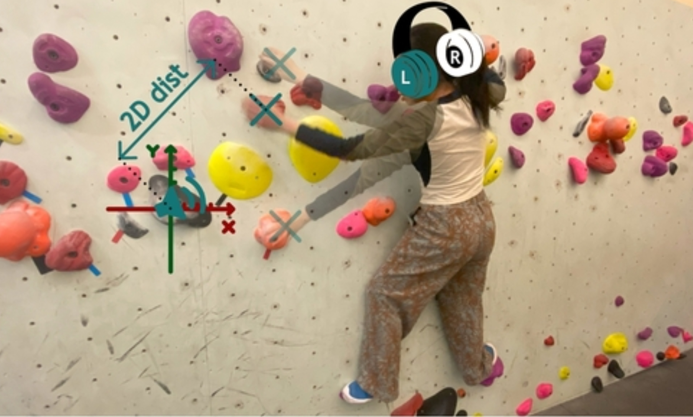
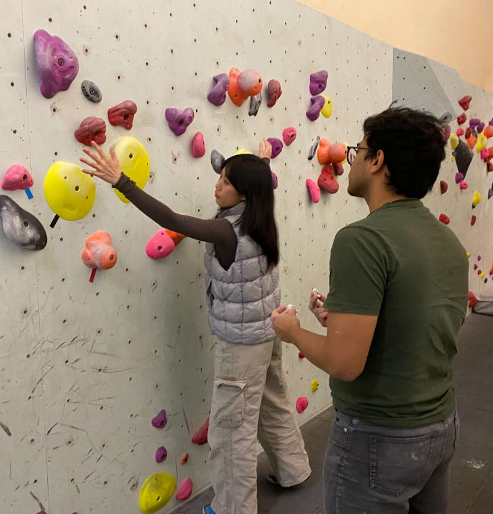

Sonified Guidance for Bouldering — exploring whether auditory feedback alone can replace visual and verbal climbing instruction.
Imagine you're mid-climb, body suspended, wondering where the next hold is. Your coach calls from the ground: "Up and to the left." But there are six holds up and to the left. Which one?
That was the starting point for this project: when vision is occupied and language isn't precise enough, can sound alone handle spatial guidance?


The first idea was a VR headset — intuitive, able to overlay visual information. But the moment we put it on, the problems were obvious: it restricted neck movement and introduced real safety risks on the wall — collisions with holds, potential falls. Safety ruled it out immediately.
We also tried speech cues. "Move upper left" sounds reasonable, but a climbing wall can have ten holds in that direction. Natural language simply doesn't have the spatial granularity this environment demands.
With vision ruled out and language ruled out, we were left with pure sound.
We designed two sonification conditions to compare:
Stereo channel selection handled the other dimension: left channel for left hand, right for right. We LiDAR-scanned the entire climbing wall to map every hold in 3D space, used a Kinect sensor to track the climber's head and hands in real time, and had Unity dynamically modulate the audio based on distance. Participants wore wireless headphones throughout.
Twelve participants completed both conditions in a real climbing gym, within-subjects design with Latin Square counterbalancing. The results were clear:
Tempo was rated 16.5% more efficient and 33.3% more preferred. Why? Volume changes are subtle, easy to miss — the shift in loudness as you approach a hold can fall below the threshold of perception, and environmental noise makes it worse. Tempo carries something more instinctive, borrowing from an existing mental model: parking sensors. People have already been trained to read "faster beeping = getting close." No learning required, the body just responds.
That said, tempo introduced an unintended side effect. Several users described feeling "stressed and rushed" as the beat accelerated near a hold, creating a false sense of urgency that sometimes disrupted movement quality. Calibrating how to encode distance information without triggering unnecessary psychological pressure is the next design problem to solve.
One more finding: participants with prior auditory guidance experience completed the tempo condition nearly 40% faster than those without. The system's ceiling is partly determined by the user's auditory literacy — a clear entry point for thinking about onboarding within the system.
While climbers listened to the audio cues, their fingers were reading the texture of the holds, their muscles were negotiating balance and weight shift. We didn't design any of that, but it was always present, working alongside the audio to complete the guidance.
That changed how I think about multimodal interaction. It isn't just the channels you deliberately layer on top of each other — it includes what the environment already provides, and what the user's body already knows. Good design understands which layer it's operating on, and what's sitting next to it.